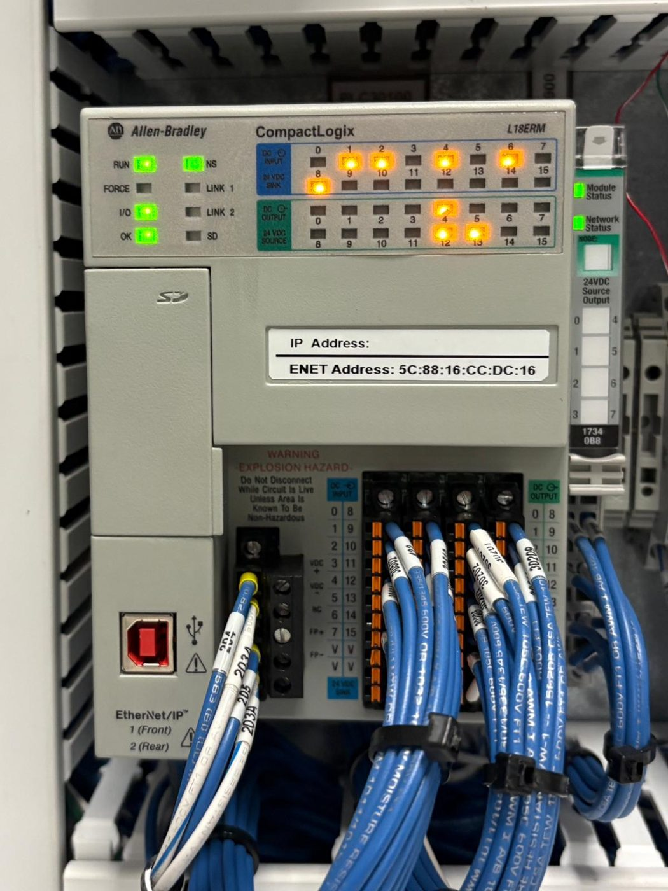

El sistema es una celda automatizada que reemplaza las estaciones manuales críticas de la línea. Combina mecánica (diseñada en SolidWorks), un panel eléctrico con PLC y HMI, y un circuito de seguridad de doble canal.
Estado: esta sección se completa a medida que se cierran los diagramas de AutoCAD Electrical, el presupuesto de servicios de ingeniería y la lista de materiales (BOM). Lo que aparece abajo es lo ya confirmado.
Los circuitos DC trabajan a 24 VDC. El sistema tiene dos motores stepper y la lista de cargas es esta: PLC con HMI y Ethernet, módulos de I/O, paro de emergencia con cortina de luz, y los dos steppers.
| Concepto | Potencia | Corriente |
|---|---|---|
| Carga nominal total | 230.4 W | 9.60 A |
| Con factor de carga continua NEC / NFPA 79 (×1.25) | 288.0 W | 12.0 A |
| Fuente especificada: Omron S8VK-G24024 | 240 W | 10 A |
Conclusión: la fuente cubre la carga nominal (9.60 A de 10 A) pero queda corta bajo el criterio de carga continua (12.0 A contra 10 A). La recomendación del grupo es subir a una fuente de 12–15 A en la próxima revisión.
Detectar y corregir esto antes de construir es parte normal de un diseño responsable, por eso se muestra tal cual.
El PLC CompactLogix 1769-L18ERM recibe las señales de los sensores y de proceso, ejecuta la lógica y activa los actuadores y los steppers. Se comunica por Ethernet con la HMI, desde donde el operador ve el estado del sistema y lo controla.

El circuito de seguridad tiene dos canales independientes: el paro de emergencia y la cortina de luz entran a un relé de seguridad de doble canal. Si las dos señales no coinciden, el relé fuerza un paro seguro en vez de permitir una falla silenciosa de un solo punto.
- Paro de emergencia (E-Stop).
- Cortina de luz Keyence GL-VM15FP, 15 ejes, ø14 mm, para proteger los dedos.
- Relé de seguridad Guardmaster de doble canal.
- Desconectador ABB OT40F3 como punto de bloqueo y etiquetado (LOTO).
- Diseñado alrededor de OSHA 1910.212, OSHA 1910.147 y NFPA 79.
| Componente | Modelo y especificación |
|---|---|
| PLC | Allen-Bradley CompactLogix 1769-L18ERM |
| HMI | AutomationDirect C-more CM5-T10W, 10" |
| Fuente de poder | Omron S8VK-G24024, 24 VDC, 240 W / 10 A (ver Potencia) |
| Enclosure | NEMA 4X, acero inoxidable |
| Cortina de luz | Keyence GL-VM15FP, 15 ejes, ø14 mm |
| Relé de seguridad | Guardmaster de doble canal |
| Desconectador | ABB OT40F3 |
| Motores | Dos motores stepper |
SolidWorks
Diseño mecánico y modelo 3D de la celda.
AutoCAD Electrical
Diagramas eléctricos y layout del panel.
Studio 5000 Logix Designer
Programación de la lógica de control del PLC.
C-more
Programación de las pantallas de la HMI.
También se usó Microsoft Office para la documentación, el seguimiento de materiales y el presupuesto.
- Subir la fuente de poder a 12–15 A.
- Cerrar los diagramas de AutoCAD Electrical de potencia y seguridad.
- Completar la lista de materiales (BOM) y el presupuesto de servicios de ingeniería.
- Validación, integración final y pruebas de aceptación.
- Entrenamiento de operadores y mantenimiento, y documentación As-Built.